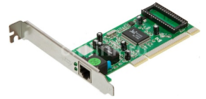

Сетевой адаптер
Сетевой адаптер — плата, которая вставляется в компьютер и обеспечивает его подсоединение к ЛВС

Сетевой адаптер (Network Interface Card (или Controller), NIC) вместе со своим драйвером реализует второй, канальный уровень модели открытых систем (OSI) в конечном узле сети — компьютере. Более точно, в сетевой операционной системе пара адаптер и драйвер выполняет только функции физического и MAC-уровней, в то время как LLC-уровень обычно реализуется модулем операционной системы, единым для всех драйверов и сетевых адаптеров. Собственно так оно и должно быть в соответствии с моделью стека протоколов IEEE 802. Например, в ОСWindows NT уровень LLC реализуется в модуле NDIS, общем для всех драйверов сетевых адаптеров, независимо от того, какую технологию поддерживает драйвер.
Сетевой адаптер совместно с драйвером выполняют две операции: передачу и прием кадра. Передача кадра из компьютера в кабель состоит из перечисленных ниже этапов (некоторые могут отсутствовать, в зависимости от принятых методов кодирования):
- Прием кадра данных LLC через межуровневый интерфейс вместе с адресной информацией MAC-уровня. Обычно взаимодействие между протоколами внутри компьютера происходит через буферы, расположенные в оперативной памяти. Данные для передачи в сеть помещаются в эти буферы протоколами верхних уровней, которые извлекают их из дисковой памяти либо из файлового кэша с помощью подсистемы ввода-вывода операционной системы.
- Оформление кадра данных MAC-уровня, в который инкапсулируется кадр LLC (с отброшенными флагами 01111110). Заполнение адресов назначения и источника, вычисление контрольной суммы.
- Формирование символов кодов при использовании избыточных кодов типа 4В/5В. Скремблирование кодов для получения более равномерного спектра сигналов. Этот этап используется не во всех протоколах — например, технология Ethernet 10 Мбит/с обходится без него.
- Выдача сигналов в кабель в соответствии с принятым линейным кодом — манчестерским, NRZI, MLT-3 и т. п.
Прием кадра из кабеля в компьютер включает следующие действия:
- Прием из кабеля сигналов, кодирующих битовый поток.
- Выделение сигналов на фоне шума. Эту операцию могут выполнять различные специализированные микросхемы или сигнальные процессоры DSP. В результате в приемнике адаптера образуется некоторая битовая последовательность, с большой степенью вероятности совпадающая с той, которая была послана передатчиком.
- Если данные перед отправкой в кабель подвергались скремблированию, то они пропускаются через дескремблер, после чего в адаптере восстанавливаются символы кода, посланные передатчиком.
- Проверка контрольной суммы кадра. Если она неверна, то кадр отбрасывается, а через межуровневый интерфейс наверх, протоколу LLC передается соответствующий код ошибки. Если контрольная сумма верна, то из MAC-кадра извлекается кадр LLC и передается через межуровневый интерфейс наверх, протоколу LLC. Кадр LLC помещается в буфер оперативной памяти.